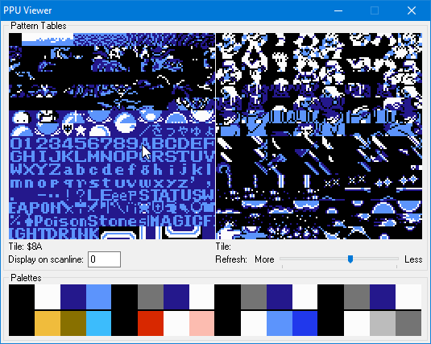
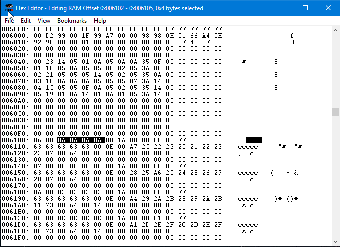
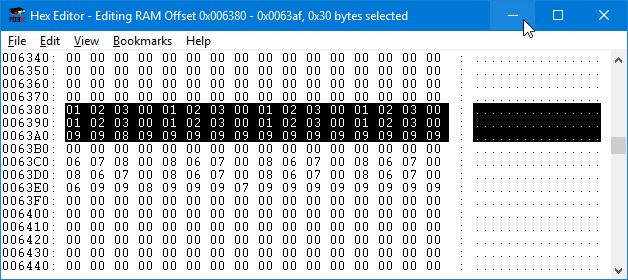
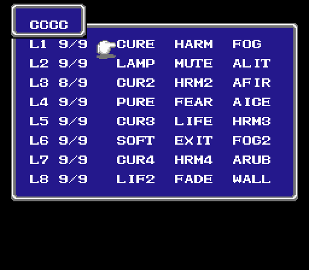
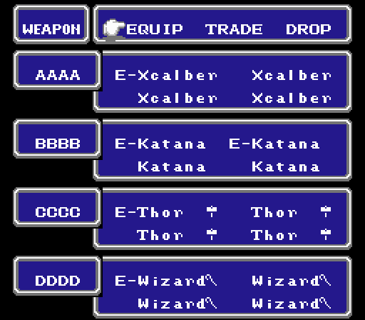
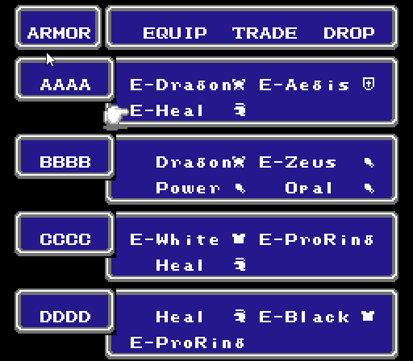

Hacking Final Fantasy 1 on the NES
Jeff DeWall 9 min read March 19, 2017 #RetroGaming #HackingA few years ago I was inspired to hack around on some of my old favorite NES games after watching the video from Double Fine where the developer Brandon Dillon hacks around on the original Legend of Zelda. You can watch the video here.
I decided I wanted to hack Final Fantasy 1, one of my favorite games growing up, that I put in more than 100 hours playing. I used fceux as my NES emulator, same as in the video and followed mostly the same patterns.
I kept some notes on how I did it and thought others might find the process as interesting and fun as I did. I ended up losing most of the notes from a few years ago, so I went back and rediscovered the different memory locations and values to use again.
I searched in the RAM Search window for values, particularly as something in-game would change, such as when you buy a weapon or a spell, in order to track down the correct memory locations. Then I would use the Hex Editor tool to look at the NES RAM and try poking different locations.
Note that values that need more than one byte are stored little-endian, so the lower byte shows up first in memory.
Character Data and Stats
The character data is organized into four blocks, once for each character, one after the other starting at 0x6100. I was able to find this by searching for my character's names in RAM. The trick is finding the value associated with the letters, which you can do by looking at the PPU memory and determining what tile goes to what letter.
You can see that a capital 'A' is mapped to 0x8A. I named my first character 'AAAA' so searching through the Hex Editor in FCEUX for the hex "8a8a8a8a" brings us right to the first character's block of data:
| Address | Character Data |
|---|---|
| 0x6100 - 0x613f | 1st character |
| 0x6140 - 0x617f | 2nd character |
| 0x6180 - 0x61bf | 3rd character |
| 0x61c0 - 0x61ff | 4th character |
Some interesting locations within a character block:
| Address | Attribute |
|---|---|
| 0x0 | character type |
| 0x1 | character alive state (0: alive, 1:dead) |
| 0x2 - 0x5 | character name (using PPU tile indices) |
| 0x7 - 0x9 | experience points |
| 0xa - 0xb | current hit points |
| 0xc - 0xd | max hit points |
| 0x10 - 0x14 | Str, Agl, Int, Vit, Luck |
| 0x20 - 0x23 | Damage, Hit%, Absorb, Evade % |
I found many of the above locations by looking at the Stats section for a character and then looking for the hex converted values within the block. For instance, looking for my first character's Str and Agl of 20, and 5 was a matter of looking for the hex values 14, 05 and finding them on the second line of the data block. Then I messed with the values and saw what changed.
When you start the game, you characters are child versions of their classes: fighter, black mage, etc. Later in the game, after you get the Rat's Tail, they become adults: knight, black wizard etc. You can increase the character's type value by 6 (the total number of character classes), and they will change to their adult version right away.
Magic
What magic spells a character has, and the current/max number of spells per level are stored in blocks for each character starting at 0x6300:
| Address | Character Magic Data |
|---|---|
| 0x6300 - 0x632f | 1st character |
| 0x6340 - 0x636f | 2nd character |
| 0x6380 - 0x63af | 3rd character |
| 0x63c0 - 0x63ef | 4th character |
The first 32 bytes are what spells the character has for each level. Each level gets 4 bytes, with the first 3 being the spell in that level's slot, and the 4th byte being 0. White spells for a level are numbered 0-4 and black spells are 5-8.
The last 16 bytes within the block are 2 bytes for each level, with the first byte being the current number of casts left for the level, with the 2nd byte being the max.
Here you can see a white wizard that I've given the first 3 spells of each level to (the repeating 01 02 03) and that has 9 / 9 casts for each level:
And the white wizard's magic table in-game looks like:
White Magic Spell table
| 1 | 2 | 3 | 4 --- | --- | --- | --- | --- Lvl 1 | cure | harm | fog | ruse Lvl 2 | lamp | mute | alit | invs Lvl 3 | cur2 | hrm2 | afir | heal Lvl 4 | pure | fear | aice | amut Lvl 5 | cur3 | life | hrm3 | hel2 Lvl 6 | soft | exit | fog2 | inv2 Lvl 7 | cur4 | hrm4 | arub | hel3 Lvl 8 | lif2 | fade | wall | xfer
Black Magic Spell table
| 5 | 6 | 7 | 8 --- | --- | --- | --- | --- Lvl 1 | fire | slep | lcok | lit Lvl 2 | ice | dark | tmpr | slow Lvl 3 | fir2 | hold | lit2 | lok2 Lvl 4 | slp2 | fast | conf | ice2 Lvl 5 | fir3 | bane | warp | slo2 Lvl 6 | lit3 | rub | qake | stun Lvl 7 | ice3 | brak | sabr | blnd Lvl 8 | nuke | stop | zap! | xxxx
Weapons and Armor
By buying a rapier and then equipping/unequipping I found the equip memory to be at 0x0300, there are 16 bytes available, matching the 4 slots for each character. Each weapon and armor has a number and to be equipped is a matter of setting the highest bit. For example, if the rapier is 04, then 84 means an equipped rapier.
Interestingly, the memory seems to be used for the equip menu, and is mirrored at 0x0b00, 0x1300, and 0x1b00 as well. This same memory is used when equipping armor, so you can set the values while equipping, and they will stick when you leave the menu.
Weapons List
| Hex Code | Weapon | Hex Code | Weapon |
|---|---|---|---|
| 00 | Nothing | 15 | Ice Sword |
| 01 | Wooden Nunchucks | 16 | Dragon sword |
| 02 | Small dagger | 17 | Giant sword |
| 03 | Wooden staff | 18 | Sun Sword |
| 04 | Rapier | 19 | Coral sword |
| 05 | Iron Hammer | 1a | Were Sword |
| 06 | Short Sword | 1b | Rune sword |
| 07 | Hand Axe | 1c | Power staff |
| 08 | Scimatar | 1d | Light Axe |
| 09 | Iron Nunchucks | 1e | Heal staff |
| 0a | Large Knfie | 1f | Mage staff |
| 0b | Iron Staff | 20 | Defense ? |
| 0c | Sabre | 21 | Wizard staff |
| 0d | Long Sword | 22 | Vorpal |
| 0e | Great Axe | 23 | CatClaw |
| 0f | Falchon | 24 | Thor Hammer |
| 10 | Silver dagger | 25 | Bane Sword |
| 11 | Silver Sword | 26 | Katana |
| 12 | Silver Hammer | 27 | XCalber |
| 13 | Silver Axe | 28 | Masmune |
| 14 | Flame sword |
Armor List
| Hex Value | Armor | Hex Value | Armor |
|---|---|---|---|
| 01 | Cloth | 15 | Ice shield |
| 02 | Wooden Armor | 16 | Opal shield |
| 03 | Chain Armor | 17 | Aegis Shield |
| 04 | Iron Armor | 18 | Buckler |
| 05 | Steel Armor | 19 | ProCape |
| 06 | Silver Armor | 1a | Cap |
| 07 | Flame Armor | 1b | Wooden helmet |
| 08 | Ice Armor | 1c | Iron helmet |
| 09 | Opal Armor | 1d | Silver helmet |
| 0A | Dragon Armor | 1e | Opal helmet |
| 0b | Copper ring | 1f | Heal helmet |
| 0c | Silver ring | 20 | Ribbon |
| 0d | Gold ring | 21 | Gloves |
| 0e | Opal Ring | 22 | Copper bracer |
| 0f | White Shirt | 23 | Iron bracer |
| 10 | Black shirt | 24 | Silver bracer |
| 11 | Wooden shield | 25 | Zeus bracer |
| 12 | Iron shield | 26 | Power bracer |
| 13 | Silver shield | 27 | Opal bracer |
| 14 | Flame shield | 28 | ProRing |
Playing around with the values, I ended up with weapons like:
and my armor setup looked like this, although I wasn't trying to find the best setup:
Other Misc Game Data
I ended up finding some general game data by searching for the gold amount of my party. Gold is stored in at least 3 bytes at 0x601c - 0x601e (highest byte is 601e). Setting the value above 0x0F423F (999,999) will cause you to have more gold when buying items, but sometimes the display value can be messed up and display some random letters like 999,9N2. I didn't dig much more into this as having more gold wasn't necessary.
Memory location 0x6016, when changed to non-zero, triggers the cut scene when the heroes first cross the bridge after defeating Garland.
By writing 1's to the values in the generic game data block. I narrowed down the light orb booleans to the addresses: 0x6032-0x6035. A zero means the orb has not yet been obtained, and any other values shows the orb as shining.
The character's world position: 0x0027 xpos, 0x0028 ypos. You can teleport the player around by changing these values. If you do so the map doesn't update automatically, but you'll see the new location tiles scroll in as you start to walk around or you can do a screen refresh by going into the party menu and then leaving.
If you teleport onto a location, like a mountain or water, you'll be stuck, but then you just need to teleport yourself by changing the world position some more.
I wanted to find the airship right away, so I looked at a map online of FF1 and guesstimated where the world pos should be. I teleported myself in the desert where the airship is, placing myself nearby at 0xD1, 0xE5 for the x and y coordinates respectively.
Then looking back at the general game data block at 0x6000, I noticed a pair of coordinates DD, ED at 0x6005-0x6006 that looked like they could belong to the airship world position. So I tried setting the values around that to 1 to see if that would enable to the airship and setting the byte just before, which was 0, to 1, caused it to increment to 1f and the airship to appear at 0xDD, 0xED.
In a new game, you could simply move the airship to your world position and enable it and it will appear right next to you.
Wrapping up
This was a fun way to spend a few hours on a rainy Saturday revisiting one of my favorite games from my youth without investing as many hours playing. It does make me feel a bit less inclined to play old RPGs now, knowing that I'm grinding just to increase a few bytes of memory.
I hope you've found this interesting and try hacking around on an old game from your past and share the details. Happy hacking!